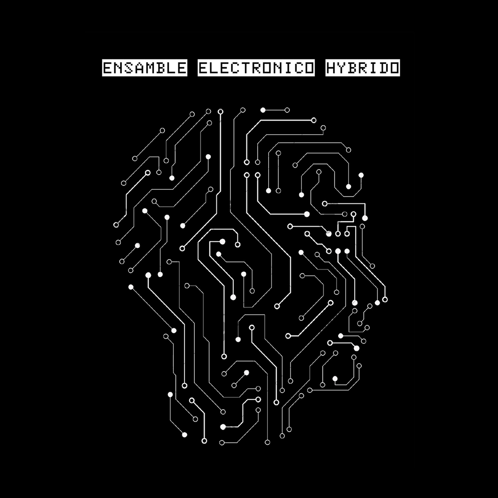

Vel
Tam
EspectroJam
* haciendo click en el boton comenzará a reproducirse el multitrack.
* con los botones que se encuentran al lado izquierdo de este se pueden elegir distintos modos de visualización de espectrogramas.
* visualización de pistas superpuestas en sentido vertical de arriba hacia abajo
* visualización de pistas superpuestas en sentido horizontal de izquierda a derecha
* visualización de pistas separadas en sentido vertical de arriba hacia abajo
* visualización de pistas separadas en sentido horizontal de izquierda a derecha
* dependiendo de la posicion del mouse sobre el espectrograma, la mezcla del track variará
* acercandose con el mouse a cada esquina del canvas se enfatizará una pista del multitrack
* (arriba a la izquierda el track 1, arriba a la derecha track 2, abajo a la derecha track 3, abajo a la izquierda track4)
* con los botones Vel "+"" y "-" modificará la velocidad de visualización.
* con los botones Tam "+"" y "-" modificará el zoom en la visualización.
* para escuchar todas las pistas "al mismo volumen y sin modificaciones en la imagen stereo ubique el mouse a la mitad de la altura de la pantalla donde se escuentra el punto blanco.
* para mostrar y esconder este instructivo, vuelva a presionar el boton o haga click en cualquier parte de la pantalla.
* haciendo doble click en la pantalla, se establecerá el modo Pantalla Completa
* el track fue compuesto, interpretado, grabado y producido por Ensamble Electronico Hybrido durante el año 2019 en EstudioSaurio, Villa Luro, C.A.Buenos Aires, Argentina.
* formacion del EEH en "EspectroJam":
- Lucas Tomasin : Cyclone TT-303, TT-606, FX
- Nahuel Rodrigues : Korg MiniKaosPad
- Shimon : Korg Minilogue
- Tomás Lilli : Korg Arp Oddysey, FX
- Yani Pantano : MFB Microzwerg
* la interfaz interactiva fue desarrollada por Tomás Lilli con p5js - p5-sound - p5.touchgui durante la cursada de Tecnologias Hipermediales - Lic.AA.EE - UNTREF 2022.
* para escuchar y ver más de EEH: